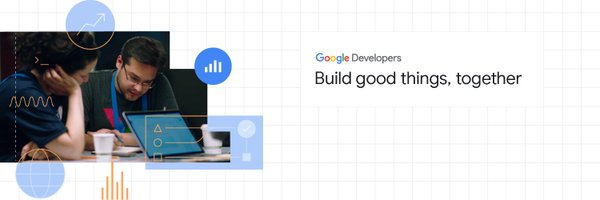

DSC JSSATEN
279 Tweets

DSC JSSATEN
@DSCJSSATEN
DSC trains thousands of student developers globally and works with their
communities to solve real-life problems. Community lead
@pragati_verma18
137
Followers
138
Following
Not followed by anyone you’re following
👋Hey Droids!
— DSC JSSATEN (@DSCJSSATEN) December 17, 2020
We have another session of Android Study Jam coming up your way. Join us on
📅 December 19, 2020
🕒 4 PM - 6 PM
👉 RSVP now at: https://t.co/6zj8rk3ryL#AndroidStudyJams #Android #100DaysOfCode #DEVCommunity #AndroidDev
Had an awesome interactive session on Design with @krrohitch and @prototyper23!
— DSC JSSATEN (@DSCJSSATEN) June 6, 2021
Thanks for the amazing discussion and we'll be back with more such sessions soon 😊🚀 pic.twitter.com/mtNRjZNm6a
Join DSC JSSATEN discord channel at https://t.co/j8VBanPlxS
— DSC JSSATEN (@DSCJSSATEN) June 4, 2021